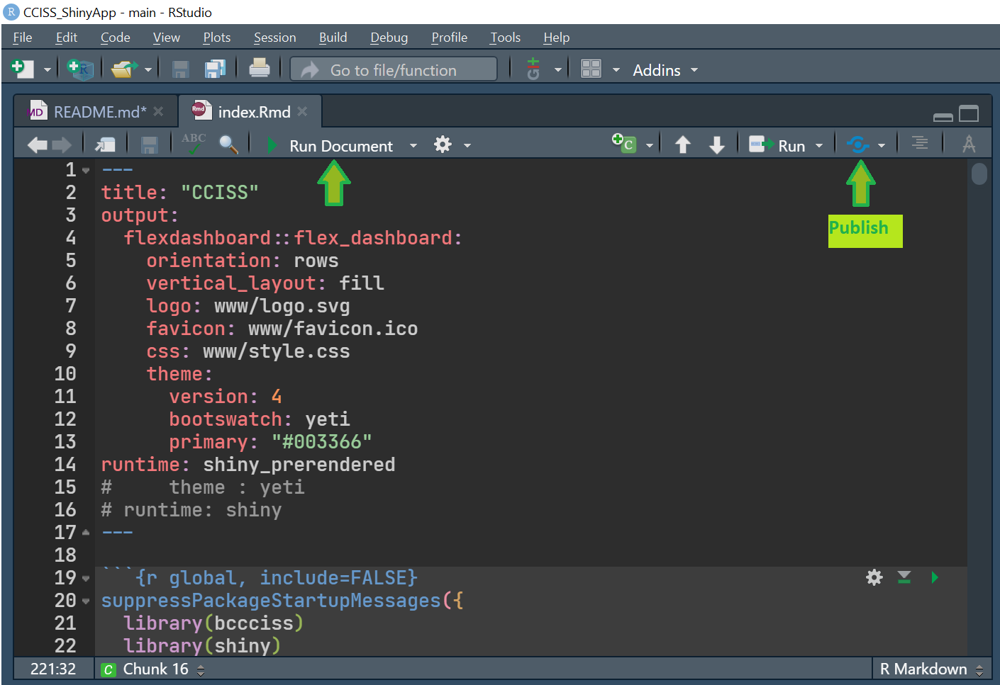

CCISS RMD knitr report graphics and Shiny App This repository is a fork of a development CCISS R script for devexchange code-with-us development. There are two development tasks. 1. Add in several graphical summaries for an existing CCISS RMD for a formatted knitr report of the RMD. The graphical formats parallel existing web reporting 2. Build a shiny app version of the CCISS rmd. A scaleable BEC map interface for retrieving lat/long for submission to the CCISS script. Graphical output of BGC futures, tree species feasibility ratings by timeperiod, and display of existing stocking standard recommendations
remotes::install_github("bcgov/CCISS_ShinyApp")
shiny::runApp("./app")
remotes::install_github("bcgov/CCISS_ShinyApp")
.Renviron file in ./app and provide necessary values./app/index.Rmd
.Renviron, index.Rmd, www, server only
The app requires the following environment variables.
BCGOV_USR={postgres user}
BCGOV_PWD={postgres password}
BCGOV_DB={postgres database}
BCGOV_HOST={postgres host}
BCGOV_TILESERVER={tileserver gl x, y, z url template}
BCGOV_TILELAYER={tileserver layer}
BCGOV_MAPBOX_TOKEN={mapbox api key}
BCGOV_MAPBOX_LABELS_STYLE={mapbox labels style ref user/styleref}
BCGOV_MAPBOX_HILLSHADE_STYLE={mapbox hillshade style ref user/styleref}Standard R package folder for the Data in packages. Data is generated from create_package_data script in data-raw/scripts. The script is run manually to update data as needed. When a package includes data, they are available like other objects after you load the library.
Commonly used to store scripts to create package assets. This can include model training, package data creation or, like this package, tiles creation. Usually code in this folder is ran manually and is not part of the package but kept with the package repository.
Standard R package folder. The contents of the inst subdirectory will be copied recursively to the installation directory. This is described in Data in packages
Standard R package folder for documentation. Where roxygen2 saves generated documentation. This package use roxygen2 to make documenting functions and objects easier.
Also standard, this package R functions, methods and objects are there. The code there will be included with the package when it is built.
Also standard. Code which needs to be compiled.
R is a great community. There is a lot of great resources on how to build packages. I highly recommend R packages by Hadley Wickham and Jenny Bryan.
Tells git which files to ignore. See git documentation.
Tells R which files to ignore when it builds the package. See Writing R extension.
Github actions workflows. - Package checks (R-CMD-check) - Online documentation (pkgdown), - Tests coverages report (test-coverage) - Style code / run roxygen2 (pr-commands) You can read more about actions from r-lib/actions
Workflows are setup or updated with the following instruction.
usethis::use_tidy_github_actions()Custom modifications made.
- Reduce the number of target for R CMD check.
To disable a workflow, go the github actions tab, select a workflow, click on the … dots on the right and select disable workflow.
Copyright 2021 Province of British Columbia
Licensed under the Apache License, Version 2.0 (the “License”); you may not use this file except in compliance with the License. You may obtain a copy of the License at
http://www.apache.org/licenses/LICENSE-2.0
Unless required by applicable law or agreed to in writing, software distributed under the License is distributed on an “AS IS” BASIS, WITHOUT WARRANTIES OR CONDITIONS OF ANY KIND, either express or implied. See the License for the specific language governing permissions and limitations under the License.